|
|
|
Fluted
giant clam
Tridacna
squamosa
Family
Tridacnidae
updated
May 2020
Where
seen? This beautifully sculptured giant clam is sometimes
seen on our undisturbed Southern shores, near living reefs.
Features: 15-30cm. The two-part
shell has 5-6 rows of deep open flutes on the valves. The wavy shell
opening faces the sunlight, while the hinged side is firmly attached
to rocks or coral rubble in relatively shallow water near living reefs.
It does not burrow into coral or hard surfaces. When
submerged, the thick 'lips' of fleshy
tissue are expanded. These come in various colours and patterns, from those that camouflage against its surroundings to bright colours.
Human uses: Giant clams are considered
a delicacy and in some places, an aphrodisiac. The large shells of
these magnificent creatures are often turned into tacky souvenirs
like ash-trays. There are efforts to cultivate giant clams on a commercial
basis so as to reduce over-collection of wild clams.
Status and threats: The Fluted
giant clam (Tridacna squamosa) is listed as 'Endangered' on
the Red List of threatened animals of Singapore. According to the
Singapore Red Data Book: "Large specimens have virtually disappeared
from our shores. Young specimens are occasionally but infrequently
seen". |
 Sisters Island,
Jan 04
Sisters Island,
Jan 04 |
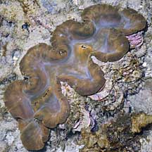
Thick fleshy
'lips' when submerged.
Pulau Biola,
May 10 |
 Terumbu Hantu, Jun 13
Terumbu Hantu, Jun 13 |
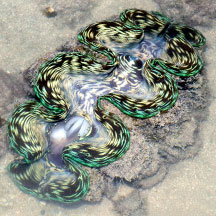
Gills seen through enlarged siphon.
Big Sisters Island, Feb 26
Photo shared by Loh Kok Sheng on facebook. |
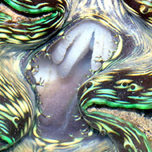
Gills through enlarged siphon.
Big Sisters Island, Feb 26
Photo shared by Loh Kok Sheng on facebook. |
|
 Big Sisters Island, Jul 13
Big Sisters Island, Jul 13 |
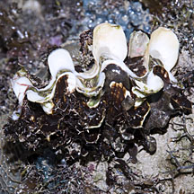
Young Fluted
giant clam.
Terumbu Semakau, May 12 |
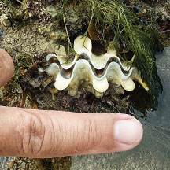
Tiny one about 4cm long
Cyrene, May 25
Photo by Richard Kuah on facebook. |
| Fluted
giant clams on Singapore shores |
| Other sightings on Singapore shores |
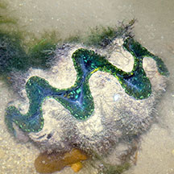
Labrador, Oct 25
Photo shared by Loh Kok Sheng on facebook. |
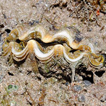
Sentosa Serapong, May 14
Photo shared by Loh Kok Sheng on flickr. |
|
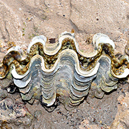
Lazarus Island, Mar 16
Photo shared by Loh Kok Sheng on his
blog. |
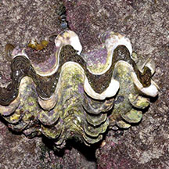
Lazarus Island, Jan 17
Photo shared by Loh Kok Sheng on facebook. |
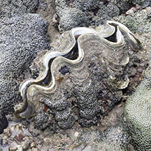
Pulau Tekukor, Jun 16
Photo shared by Loh Kok Sheng on facebook. |
 Pulau Jong,
Nov 08
Pulau Jong,
Nov 08 |
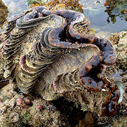
Cyrene, Aug 17
Photo shared by Abel Yeo on facebook. |
|
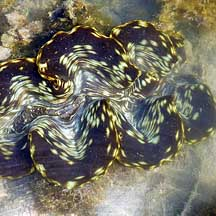
Pulau Semakau,
May 10
Photo shared by Loh Kok Sheng on his
blog. |
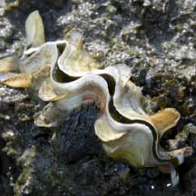
Pulau Semakau, 1 May 09
Photo shared by Loh Kok Sheng on his
blog. |
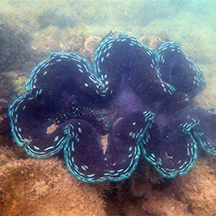
Pulau Semakau East,
Nov 14
Photo shared by Loh Kok Sheng on facebook. |
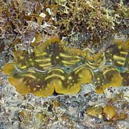
Terumbu Semakau, May 10
Photo shared by Loh Kok Sheng on his
blog. |
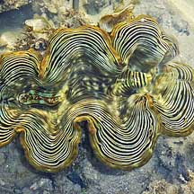
Terumbu Raya,
May 10
Photo shared by Loh Kok Sheng on his
blog. |
|
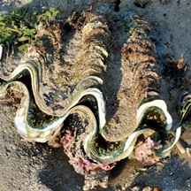
Terumbu Bemban,
Apr 11
Photo shared by Toh Chay Hoon on her
blog. |
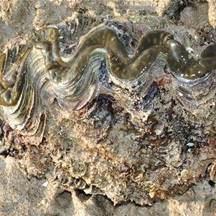
Terumbu Bemban,
Apr 11
Photo shared by Toh Chay Hoon on her
blog. |
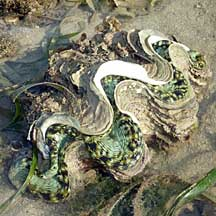
Beting Bemban
Besar, Apr 10
Photo shared by Loh Kok Sheng on his
flickr. |
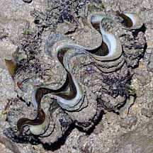
Pulau Salu,
Aug 10 |
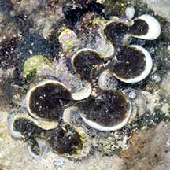
Pulau Salu,
Aug 10
Photo shared by Loh Kok Sheng on facebook. |
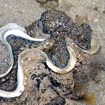
Pulau Biola,
May 10 |
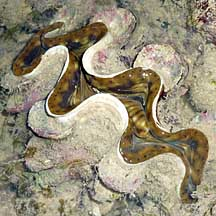
Pulau Senang,
Jun 10
|
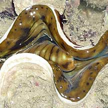
Photo shared by Loh Kok Sheng on his
flickr. |
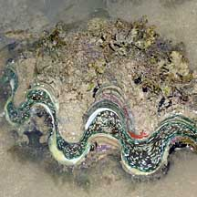
Pulau Berkas,
May 10
Photo shared by Loh Kok Sheng on his
flickr. |
| Links
References
- Neo Mei Lin & Loh Kok Sheng. 28 Nov 2025. Rediscovery of the fluted giant clam, Tridacna squamosa, at Labrador Nature Reserve. Singapore Biodiversity Records 2025 DOI: 10.26107/NIS-2025-0115
- Eckman W, Vicentuan-Cabaitan K & Todd PA (2014) Observations on the hyposalinity tolerance of fluted giant clam (Tridacna squamosa, Lamarck 1819) larvae. Nature in Singapore, 7: 111–116.
- Neo Mei Lin & Loh Kok Sheng. 5 September 2014. Giant clam shells ‘graveyard’ at Semakau Landfill, Tridacna squamosa. Singapore Biodiversity Records 2014: 248-249.
- Neo ML & Todd PA (2013) Conservation status reassessment of giant clams (Mollusca: Bivalvia: Tridacninae) in Singapore. Nature in Singapore, 6: 125–133.
- Neo ML, Todd PA, Chou LM & Teo SL-M (2011) Spawning induction and larval development in the fluted giant clam, Tridacna squamosa (Bivalvia: Tridacnidae). Nature in Singapore, 4: 157–161.
- Tan Siong
Kiat and Henrietta P. M. Woo, 2010 Preliminary
Checklist of The Molluscs of Singapore (pdf), Raffles
Museum of Biodiversity Research, National University of Singapore.
- Tan, K. S.
& L. M. Chou, 2000. A
Guide to the Common Seashells of Singapore. Singapore
Science Centre. 160 pp.
- Gosliner,
Terrence M., David W. Behrens and Gary C. Williams. 1996. Coral
Reef Animals of the Indo-Pacific: Animal life from Africa to Hawaii
exclusive of the vertebrates Sea Challengers. 314pp.
- Davison,
G.W. H. and P. K. L. Ng and Ho Hua Chew, 2008. The Singapore
Red Data Book: Threatened plants and animals of Singapore.
Nature Society (Singapore). 285 pp.
|
|
|